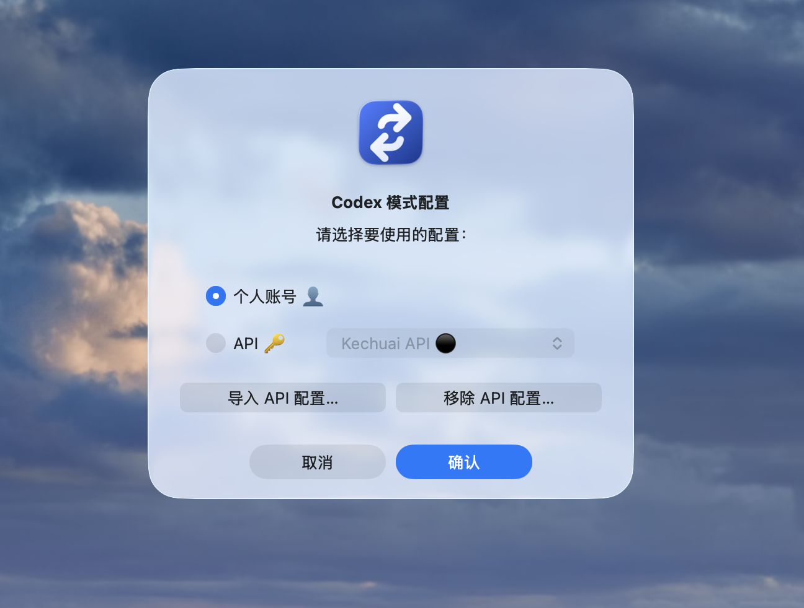
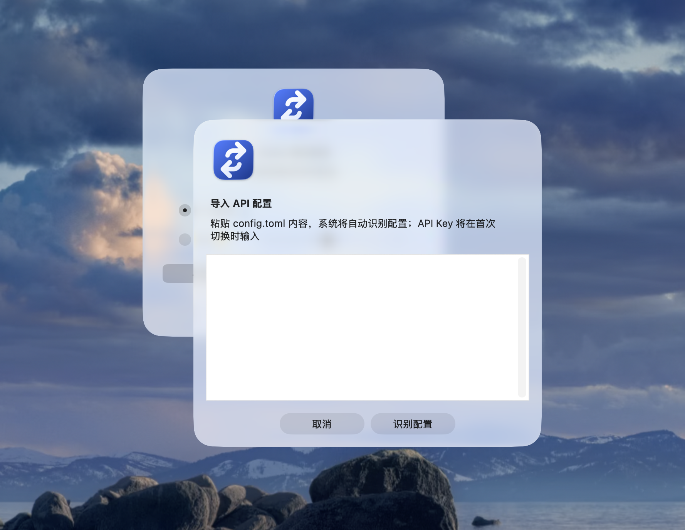
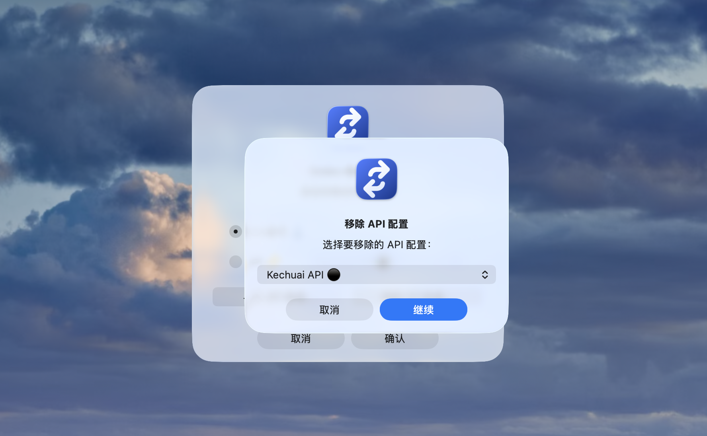

仅本地
无账号、无云同步、无遥测、无分析、无自动更新。
Codex Mode Switcher 在你的电脑本地完成配置切换：不上传配置、不保存 API Key，也不读取或恢复 ChatGPT / OAuth 登录状态。
无账号、无云同步、无遥测、无分析、无自动更新。
仅在你确认启用 API 时写入 Codex 当前认证位置；工具不保留副本，也不备份。
不会读取、导出、复制或恢复 ChatGPT / OAuth 认证信息。



Codex Mode Switcher changes configurations locally on your computer: no uploads, no retained API keys, and no reading or restoring ChatGPT / OAuth login state.
No accounts, cloud sync, telemetry, analytics, or automatic updates.
Written only to Codex's active authentication location when you confirm API activation; never retained or backed up by the tool.
Never reads, exports, copies, or restores ChatGPT / OAuth authentication.